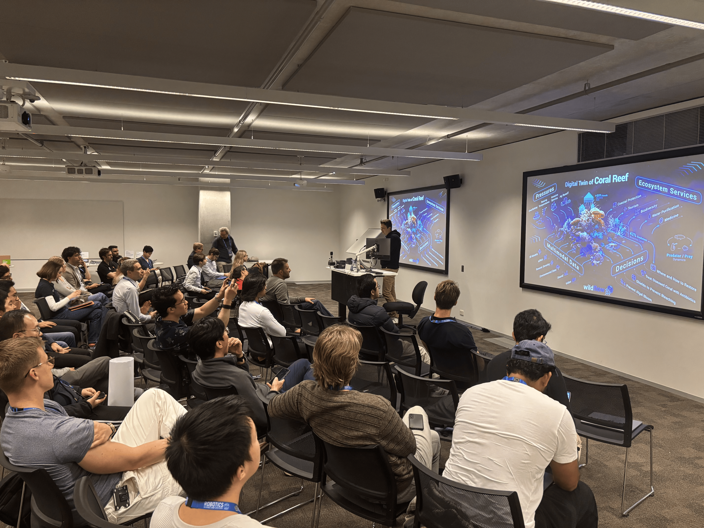
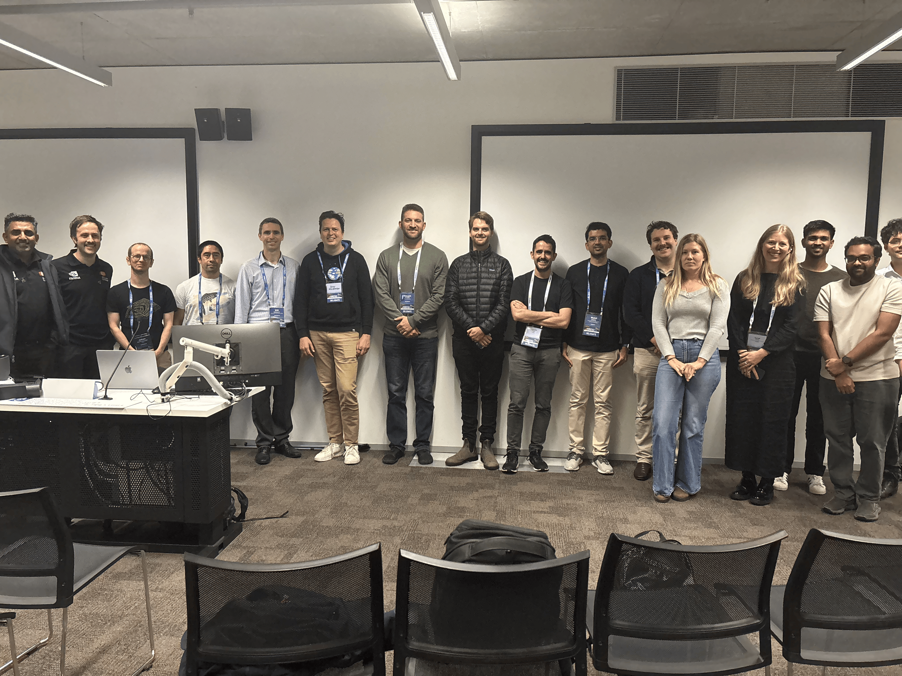
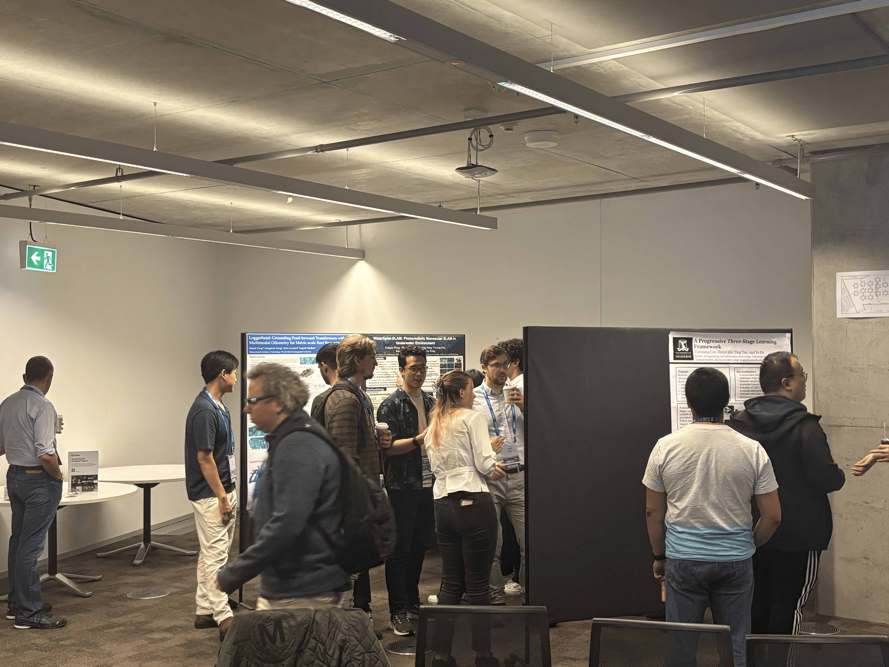
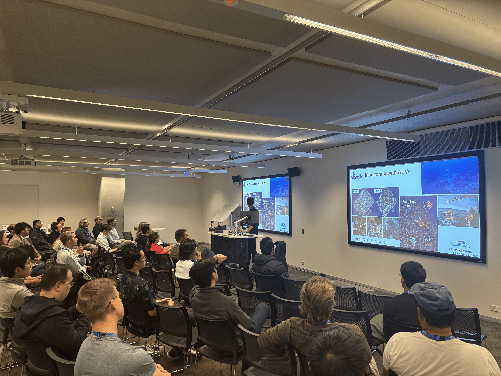
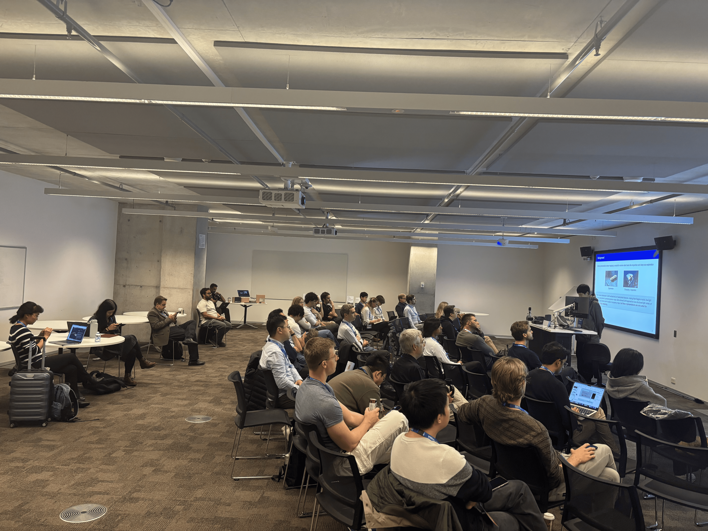
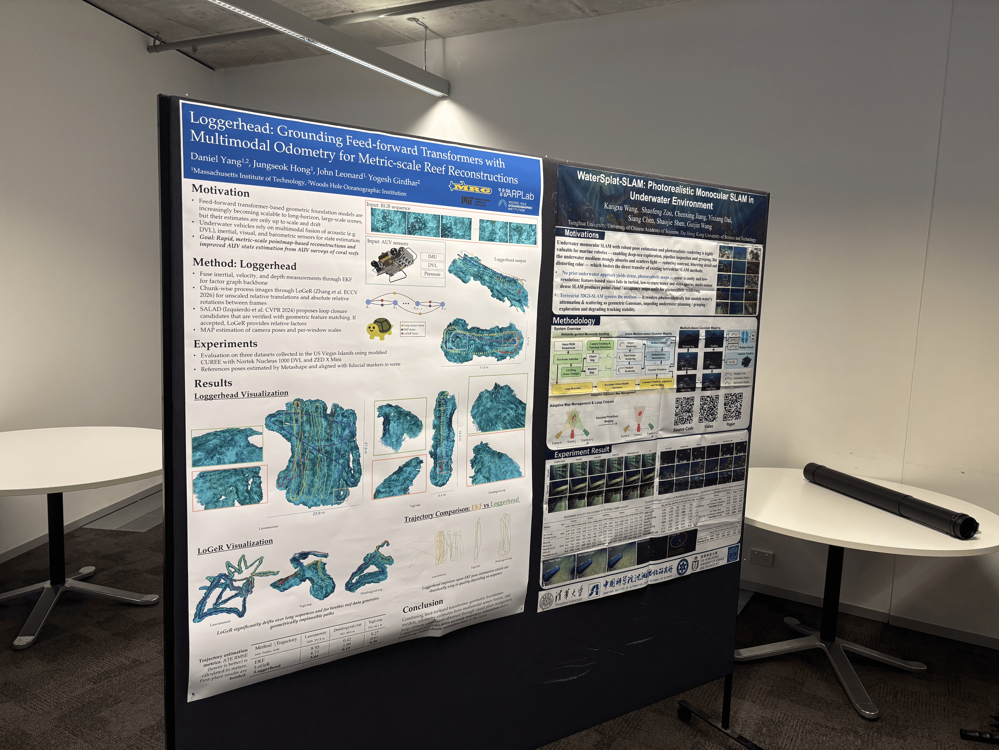
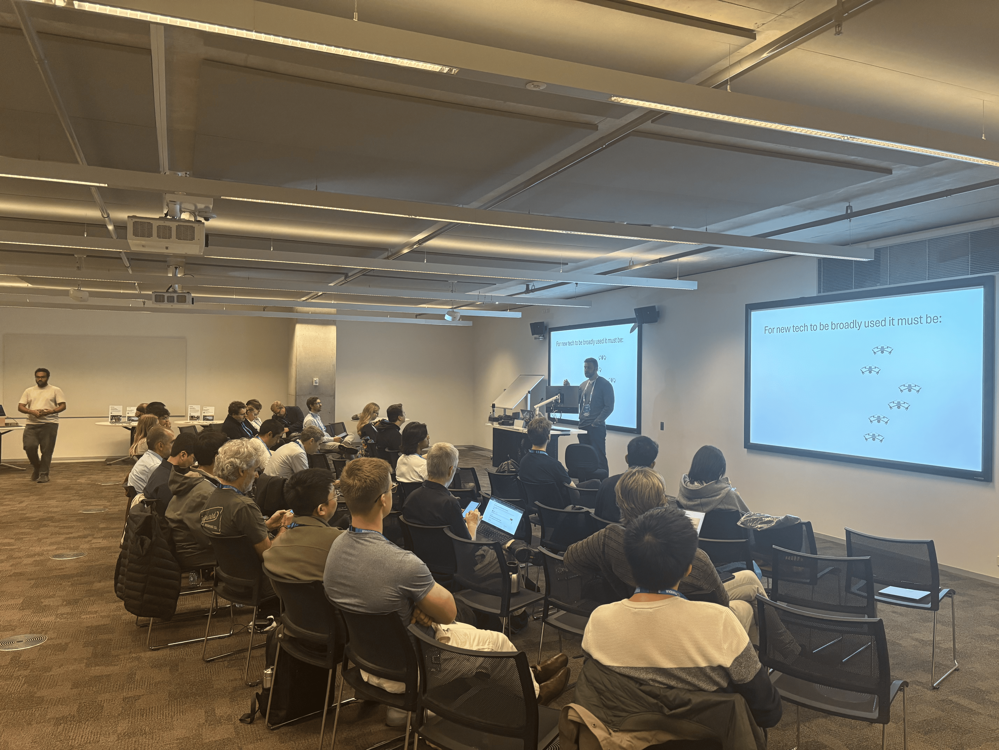
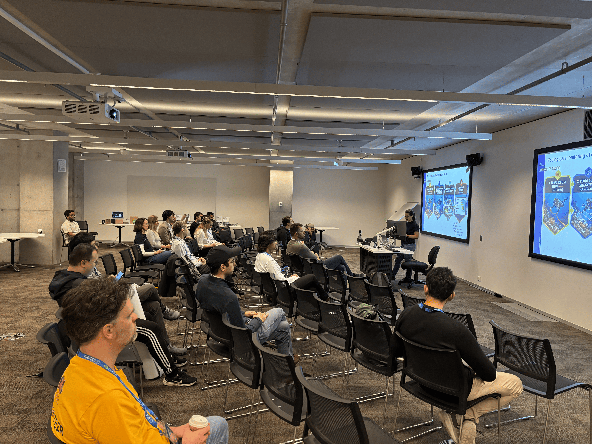

News
- Jul 9, 2026 - The venue is Room CB11.B1.101, UTS, 15 Broadway, Ultimo NSW 2007 📍🗺
- Apr 26, 2026 - Workshop proposal has been accepted! 🎉🎉
- Feb 12, 2026 - Workshop proposal submission!
Overview
Long-term 3D mapping across repeated site visits is a key capability for automating the monitoring of coral reef ecosystems, enabling applications such as structural change detection, ecosystem health assessment, and targeted intervention. Coral reefs are a particularly compelling and challenging domain: they are among the most biodiverse and valuable marine ecosystems, yet are increasingly threatened by climate change and other stressors. Monitoring efforts commonly involve repeated surveys spanning months or years., and converting these observations into reliable, quantitative evidence requires mapping methods that remain consistent across time, conditions, and platforms.
This workshop aims to bring together researchers and practitioners to share, compare, and propose techniques that can enable scalable reef monitoring. We will explore approaches that improve the ability to build useful, repeatable maps of reefs: optical, acoustic, and hybrid reconstruction; SLAM and multi-session mapping; learned and physics-informed representations; semantic and metric mapping; uncertainty estimation and quality assurance; active perception and next-best-view planning; and system-level practices for field deployment. The emphasis is on identifying what works, what fails in the wild, and what new ideas and evaluation standards are needed to turn underwater mapping into a dependable tool for reef science and conservation.
Event Pictures








Invited Speakers


Call for Papers
We invite short papers of novel or recently published research relevant to the topics of the workshop.
- Short papers are 2+n pages (2 pages content + references)
- Submissions must follow the IEEE Conference double column format
- All accepted papers will be presented as posters at the workshop and published on the workshop website.
- All accepted submissions will be considered for the best presentation award, where 3 finalists will be selected for 10-minute plenary presentations. While all submissions are eligible, novelty will be considered in finalist selection.
- Submissions are single blind and will be reviewed by members of the (extended) workshop committee.
Submission Portal
Submission portal is now open on OpenReview. We will be accepting contributions until June 30th 2026, 11:59PM, Eastern Australian Rime (GMT +10Hrs).
Awards and Recognition
All accepted submissions will be considered for three awards:
- Best Contribution Award: Winner will receive a Jetson DGX Spark.
- Best Paper Award: Winner will receive a Jetson Orin Nano Super Developer Kit.
- Best Application Award: Winner will receive a Jetson Orin Nano Super Developer Kit.
Invited topics
We invite submissions including, but not limited to:
- Geometric Mapping (SLAM/VO, multi-session): How do we get metric, repeatable, globally consistent long-term reef maps without GNSS under refraction/turbidity/lighting change/currents/limited loop closures—and when is pinhole enough vs refractive/ray-based?
- Learning-Based Approaches: How can learning deliver robust reconstruction + cross-session alignment under major change and underwater domain shift/data scarcity/visual degradation—and what reef semantics (morphology, live/dead, algae, rubble, bleaching/disease) should be baked in for monitoring?
- Autonomy and Active Perception: Mission planning, next-best-view strategies, reconstructability prediction, and adaptive behaviors for reef surveys.
- Underwater Scene Representations (NeRF/splatting/implicit maps): What representations best balance metric accuracy, interpretability, scalability, and long-term repeatability for reef monitoring—and how can foundation models and neural scenes (NeRFs, Gaussian splatting, implicit SDFs) be adapted to low-label underwater data to be practical, trustworthy, and usable by marine scientists?
- Multi-Modal Sensing + Fusion: Which sensor combinations (e.g., cameras + imaging sonar/multibeam/SSS, structured light, polarization, hyperspectral/fluorescence, water-quality) and fusion strategies yield reliable reef maps when any single modality fails—and how should suites be designed, calibrated, and deployed for robust underwater perception.
- Benchmarking Strategies for Underwater: Quantitative evaluation methods, uncertainty modeling, and benchmarking frameworks for underwater field experiments.
- From Robotics to Reef Science (field-ready systems): What representations and performance thresholds make reef mapping deployable, and how can robots predict reconstructability, report uncertainty, and adapt via active perception (next-best-view, re-scan, modality switching) as conditions degrade—while supporting scalable evaluation/ground-truthing without traditional reference systems?
Schedule
| Time | Planned Event | Speaker |
|---|---|---|
| 08:30 | Workshop kick-off and overview | |
| 08:30 | Bridging the Gap Between Marine Ecology, Robotics and Computer Vision Research, for Improved Coral Reef Monitoring | Renata Ferrari |
| 09:00 | Wildflow: Modelling Natural Ecosystems | Sergei Nozdrenkov |
| 09:30 | Coordinated AUV and Diver Studies of Mesophotic Reef Systems across the Pacific and Caribbean | Jackson Shields |
| 10:00 | Coffee Break and Poster Session | |
| 10:30 | Spotlight Talks: Best Paper, Best Poster and Best Practical Contribution | |
| 11:15 | From Prototype to Practice: Real-World Integration of Robotics into Marine Management | Vincent Raoult |
| 11:45 | Resilient Vision-based Underwater Autonomy | Mohit Singh |
| 12:15 | Mapping the Reef: Underwater 3D Reconstruction for Coral Ecosystems |
Accepted Papers
Winner of the Best Contribution Award
Loggerhead: Grounding Feed-forward Transformers with Multimodal Odometry for Metric-scale Reef Reconstructions [Paper]Daniel Yang, Jungseok Hong, John J. Leonard, Yogesh Girdhar
Winner of the Best Paper Award
WaterSplat-SLAM: Photorealistic Monocular SLAM in Underwater Environment [Paper]Kangxu Wang, shaofeng zou, Chenxing Jiang, Yixiang Dai, Siang Chen, Shaojie Shen, Guijin Wang
Winner of the Best Application Award
Lessons from Building a Semantic 3D Gaussian Splatting Pipeline for Multi-Year Coral Reef Monitoring [Paper]Alzayat Saleh, Kang Han, Renata Ferrari
Wynona Brinkmann, Victoria Preston, Luca Odio
Tianxiang Cao, ZHEYU LIU, Ying Tan, Ye Pu
Hanwen ZHANG, Yipeng Zhu, Xiaopeng Guo, Huajian Huang, Sai-Kit Yeung